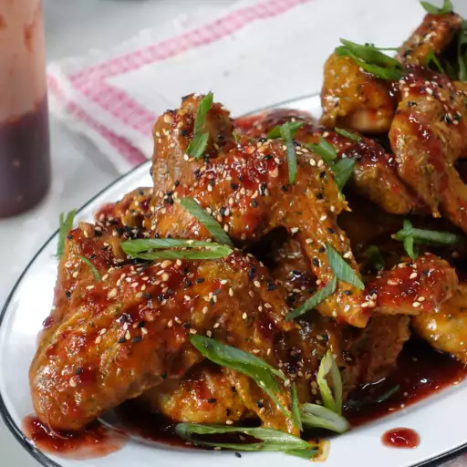

Peanut butter and jelly Wings
Ingrediants

- 1 cup peanut butter
- 6 tablespoons lime juice
- 3 tablespoons lower-sodium soy sauce
- 2 tablespoons honey
- 2 tablespoons Sriracha sauce, or to taste
- 1 bunch cilantro stems
- 5 cloves garlic
- 1 (3 inch) piece fresh ginger
- ½ cup chili paste (sambal oelek)
- ½ cup raspberry jam
- 1 pound cooked chicken wings
Steps
- Combine peanut butter, lime juice, soy sauce, honey, Sriracha, cilantro stems, garlic, and ginger in a food processor and blend until smooth. If sauce seems too thick, add 1 tablespoon water.
- Stir together raspberry jam and chili paste in a small bowl until fully combined.
- Toss cooked wings in peanut sauce until fully coated. Drizzle with raspberry-chili sauce.